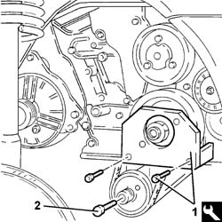
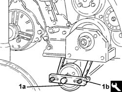
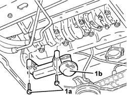

1084B16 ENGINE OIL PUMP - R.R. FOR VEHICLES WITH AIR CONDITIONING
- Path
- Procedures > 10 ENGINE > 1084 ENGINE LUBRICATION > 1084B ENGINE OIL LUBRICATION CIRCUIT > 1084B16 ENGINE OIL PUMP - R.R. FOR VEHICLES WITH AIR CONDITIONING
- Kind
- repair procedure (removal / refitting; the operation number is the code)
- Applies to
- engines: 3.0 V6, 3.2 V6; all production periods
- Interactive page
- https://sloeber94.github.io/elrnDB-lThss/en/#/718599
Applies to: engines: 3.0 V6, 3.2 V6; all production periods
 Removing
Removing
 Refitting
RefittingSee in Op. 7040D30 Engine compartment FRONT CROSSMEMBER COVER - R.R.
See in Op. 7055B38 SIDE TRIM (one) left or right - R.R.
See in Op. 7055A42 FRONT GRILLE (single) - R.R.
See in Op. 7210E10 FRONT BUMPER
See in Op. 4450B12 Front WHEELS (two) - R.R.
See in Op. 7055B42 FRONT WHEEL ARCH LINER (one), left or right - R.R.
See in Op. 7055B54 PROTECTION/GUARD under engine - R.R.
See in Op. 7040D50 ENGINE COMPARTMENT UPPER SOUND INSULATION SHIELD - R.R.
See in Op. 2710A31 INTERMEDIATE DRIVE SHAFT - R.R.
See in Op. 1092G10 Engine components single drive BELT - R.R.
See in Op. 1092G20 Engine components single belt FIXED TENSIONER - R.R.
See in Op. 1008C10 Power unit REACTION ROD - Replace
See in Op. 1008C16 BRACKET on BODY for reaction link - R.R.
See in Op. 1008A44 RIGID REAR power unit MOUNTING - R.R.
See in Op. 1020A20 CRANKCASE SUMP - R.R. clean contact surfaces and apply sealant
 | Description | Code | Function |
|---|---|---|---|
. | Counter-torque for crankshaft | 1.870.646.000 | Lock the rotation of the crankshaft |

Applies to: engines: 3.0 V6, 3.2 V6; all production periods
| Description | Code | Function |
|---|---|---|---|
. | Extractor | 1.860.954.001 | Tool for extracting chain from engine oil pump |

Applies to: engines: 3.0 V6, 3.2 V6; all production periods

Applies to: engines: 3.0 V6, 3.2 V6; all production periods
Refitting
Removing | Value - daNm | Fastening | Component | Ø |
|---|---|---|---|---|
. | (Main bearing caps side) 5 | Bolt | ENGINE OIL PUMP | M10x1.25 |
| Value - daNm | Fastening | Component | Ø |
|---|---|---|---|---|
. | (Engine oil pump side) 4.3 - 5.3 | Bolt | ENGINE OIL PUMP DRIVE CHAIN | M10 |
| Description | Code | Function |
|---|---|---|---|
. | Counter-torque for crankshaft | 1.870.646.000 | Lock the rotation of the crankshaft |
See in Op. 1020A20 CRANKCASE SUMP - R.R. clean contact surfaces and apply sealant
See in Op. 1008A44 RIGID REAR power unit MOUNTING - R.R.
See in Op. 1008C16 BRACKET on BODY for reaction link - R.R.
See in Op. 1008C10 Power unit REACTION ROD - Replace
See in Op. 1092G20 Engine components single belt FIXED TENSIONER - R.R.
See in Op. 1092G10 Engine components single drive BELT - R.R.
See in Op. 2710A31 INTERMEDIATE DRIVE SHAFT - R.R.
See in Op. 7040D50 ENGINE COMPARTMENT UPPER SOUND INSULATION SHIELD - R.R.
See in Op. 7055B54 PROTECTION/GUARD under engine - R.R.
See in Op. 7055B42 FRONT WHEEL ARCH LINER (one), left or right - R.R.
See in Op. 4450B12 Front WHEELS (two) - R.R.
See in Op. 7210E10 FRONT BUMPER
See in Op. 7055A42 FRONT GRILLE (single) - R.R.
See in Op. 7055B38 SIDE TRIM (one) left or right - R.R.
See in Op. 7040D30 Engine compartment FRONT CROSSMEMBER COVER - R.R.
Topics linked from this page (15)
- 1008A44 RIGID REAR power unit MOUNTING - R.R.
- 1008C10 Power unit REACTION ROD - Replace
- 1008C16 BRACKET on BODY for reaction link - R.R.
- 1020A20 CRANKCASE SUMP - R.R. clean contact surfaces and apply sealant
- 1092G10 Engine components single drive BELT - R.R.
- 1092G20 Engine components single belt FIXED TENSIONER - R.R.
- 2710A31 INTERMEDIATE DRIVE SHAFT - R.R.
- 4450B12 Front WHEELS (two) - R.R.
- 7040D30 Engine compartment FRONT CROSSMEMBER COVER - R.R.
- 7040D50 ENGINE COMPARTMENT UPPER SOUND INSULATION SHIELD - R.R.
- 7055A42 FRONT GRILLE (single) - R.R.
- 7055B38 SIDE TRIM (one) left or right - R.R.
- 7055B42 FRONT WHEEL ARCH LINER (one), left or right - R.R.
- 7055B54 PROTECTION/GUARD under engine - R.R.
- 7210E10 FRONT BUMPER